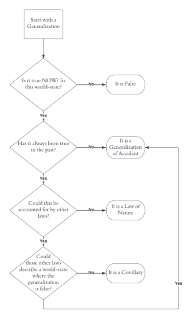

Laws as a Minimal Set
Luke Krier / Spring Semester 2023
It seems a valuable asset to be able to predict the future: It would be nice to know which stocks will do particularly well this year. But it seems an even more valuable asset when the minutia is considered: I really want to know that gravity will bear on me tomorrow. Unfortunately, there is good reason to suggest that we can neither know nor have any reason to believe either of these predictions. First formalized by David Hume, this is called the ‘Problem of Induction.’ The crux of Hume’s argument is that predictive reasoning is circular. For example, why should we predict Apple stock will go up or that gravity will bear on me? The answer, it seems, is because in the past Apple has performed well and gravity came to bear on me, and others like me. However, Hume asks, what justifies this as a good reason to predict? The answer, it seems, is because in the past our predictions based on the past were correct in the future. Now, notice the identical structure of the justification between our two questions. Because they are identical, we can ask and answer Hume’s above question ad infinitum. Hence, our predictions are circularly justified.
Faced with this issue, some philosophers of science turned to laws as a way out. If we knew that gravity came to bear on all bodies and particles at all times, I could simply notice that I am a body made of particles and thus, given I exist tomorrow, deduce gravity would bear on me tomorrow, thereby avoiding all reference to past experiences. This seems to be a promising approach and the one I seek to defend. Particularly, I will address a puzzle set forward by A.J. Ayer in What is a Law of Nature by distinguishing three interrelatedly defined generalizations: laws, corollaries, and accidents. In doing so, I hope to develop a plausible story for how we come to know the Laws of Nature and thus rational (albeit not certain) justification for predictions.
1 | A.J. Ayer’s Generalization of Law and Accident
Laws are universal statements, meaning they apply to all entities, bodies, and things everywhere at all times. This is fact is represented by a universal quantifier “∀x,” which translates to “for all x.” So, for example, we could represent the plausible law “if something has mass, gravity bears on it” by “∀x(M(x)→G(x))” where M is the predicate for “has mass,” G is the predicate for “gravity bears on,” and the arrow is the material conditional.
The issue Ayer raises is that there are universal statements that we typically would not want to consider as a law which nonetheless have an identical logical form to laws. Ayer takes to one specific example fondly: his tobacco case. He says that all the tobacco in his tobacco case is Virginian tobacco, and, having no reason to doubt him, we can conclude the logical statement ∀x((T(x)∧A(x))→V(x)) where T is the predicate for “is tobacco,” ∧ represents “and,” A is the predicate for “in Ayer’s tobacco case,” and V is the predicate for “is Virginian.” In a purely syntactic analysis, these generalizations are identical.1 However, there seems to be an important semantic difference between the two. That gravity holds everywhere on everything feels somehow more primal, foundational, and lawlike while the fact that there is only Virginian tobacco in Ayer’s case feels, well, accidental and not something that would always occur. The task set forward by Ayer is to develop or discover a framework that meaningfully captures our intuition on if a generalization is a law or simply accidentally true.
Motivated by this issue, Ayer thinks this difference is a difference of attitudes held towards different generalizations. He argues that laws just are the true generalizations we think are somehow fundamental because we think they are fundamental. In contrast, accidents are the true generalizations we think don’t bear heavily on reality. Ayer points this difference out by observing how we react when they are both refuted: In the case of generalizations of law, we tend to modify or qualify the law, not outright deny it. Whereas, for generalizations of accident, we tend to reject the generalization outright. However, the result that what is a generalization of law or accident is relative to our subjective perception of them fails to capture that very perception/intuition of laws as fundamental. Herein I argue for a system that distinguishes laws and accidents without basis in subjective attitudes.
2 | Towards A Formulation
How might we progress towards such a framework that distinguishes between generalizations of law and accident? A good place to start, I think, is by trying to understand the metaphysical entities we are working with. The base entity here used is the world-state. A world-state is the collection of all things, placed where they are, in the smallest possible moment of time. Whether this is an infinitely or finitely small slice of time does not pertain. The essence is that a time state is the collection of everything if time froze. Building up from that, we naturally define a world. A world is an ordered set of world-states past, present, and future. This seems natural to me; our lives and thereby the world we live in are a specifically ordered set of moments. Lastly, for now, there is the set of all possible worlds. We can pretty easily imagine a world where, for instance, Ayer’s tobacco case had Turkish tobacco in it, and we can also reasonably imagine that a world could exist where the gravitation constant is higher or lower. The collection of all these separate worlds, herein I call the universe.2
Utilizing these entities, our intuitions about generalizations of law and accident are mappable. If generalizations of law are fundamental, they ought to be true for all of a world’s states. In other words, go to any moment (world-state) and that law should hold. But it’s excessive to say all true generalizations in a world are laws— that all unicorns are billionaires is a true generalization, but it is vacuously so: it doesn’t say anything about the world because there are no unicorns in the world. These frivolous truths can be addressed by restricting laws to the minimally-long set of true generalizations which can account for all phenomena and all other true generalizations in a world. For now, call the rest of the true generalizations ‘corollaries.’
This definition hinges heavily on two statements that require unpacking. The first is that laws “account” for all other true generalizations. The generalization that “all ducks have webbed feet” cannot be traditionally deduced from statements about elementary particles as the concepts of “ducks” or “webbed feet” are entirely divorced from those of elementary particles. The answer comes from Gottlob Frege’s sense and reference distinction. This distinction divorces the many ways we think of objects (the sense) from the actual object itself (the referent). This is demonstrated by means of a famous example: the morning and evening star. In early astronomy, Venus was observed in two contexts, in the morning in the eastern sky and in the evening in the western sky. By these definitions, it’s clear that what is meant by “the morning star” is different from what is meant by “the evening star” (the senses) despite the two referring to the same object: Venus (the referent) (Frege 210). So, while it is true that statements regarding elementary particles cannot capture the sense of what is meant by “ducks” or “webbed feet,” they can nonetheless pick out the same referents. Put another way, all the ducks and webbed feet are extensional with elementary particles. Likewise, “all unicorns are billionaires” can be derived in our specific world by noting that there is no arrangement of elementary particles that constitutes unicorn and as a result zero out of zero unicorns are billionaires. Thus, the statements governing elementary particles would be sufficient to describe all the motions and phenomena related to ducks and webbed feet, and applying the concepts to the phenomena described by the elementary particles can net the desired generalizations.
The second statement is that laws account for all phenomena. I don’t intend this to mean that the laws of nature necessitate the existence of objects. The world and its world-states are primary and laws secondary. Meaning, the world being the way it is entails a certain set of laws, not laws entailing the shape of the world. What I intend it to mean is that laws justify the order and relationship between world-states and their internal organizations. So, within a world-state, laws should obviously hold, but as laws range over time (and hence over different world-states), the laws should be able to track objects and properties between world-states. For instance, if thermodynamics is lawlike, the total energy in a world should be identical now and tomorrow. Put another way, applying the laws to all the objects within an initial world-state should create a function of time that produces, in order, the rest of the world-states in a world.
Finally, we can carve up the universe into subsets consisting of worlds with identical laws. Call these subsets “neighborhoods.” Neighborhoods give the ability to easily distinguish corollaries and generalizations of accident. Some corollaries can be discovered by simple deduction from laws, but not all. A generalization is a generalization of accident if and only if there is a possible world-state within the neighborhood where it is false. It may be the case that within our world, Ayer’s tobacco case only every had Virginian tobacco in it, but it’s pretty obvious that it is not always the case within our neighborhood. This does mean generalizations of accident and law are relative, but they are relative to each other, not our attitudes towards them. Corollaries are then those which fit into neither category: they are always true in the neighborhood but are not fundamental.
3 | Discovery of Laws
In this section, I attempt to show the extent of this formulation’s epistemological viability and usability, i.e., how practically we can come to know (or approach knowledge) that laws are laws.

Fig. 1; Visual description of my epistemological story to decide the status of generalizations.
Key: The Box is the starting node. Diamonds represent questions. Ovals represent conclusions. Arrows dictate where to go next, and diamonds dictate which arrow to take.
The general approach is encapsulated in figure 1. To demonstrate, let’s return to Ayer’s tobacco case. We begin with the generalization ∀x((T(x)∧A(x))→V(x)). Which, again, trusting Ayer, we take to be true now and at all times in the past. Thus, we travel down to the third diamond. Intuitively, it’s easy to conclude that yes, it seems within our specific world that there are laws which underpin the elementary particles that constitute all the tobacco in Ayer’s case and the case itself. We can then travel down to the next diamond.
However, I imagine this answer is quite unsatisfying for most. After all, are we not looking for a system to construct the laws of nature? We should not need to presuppose certain laws or intuitions for it to work! It would be nice to have a simple construction algorithm, but it seems to me that if not the goal, it is at least a goal of science to develop the full explicit taxonomy of laws, corollaries, and generalizations. The full complexities of our decision-making and theory-generation processes by which we discover these do not fit the scope of this essay. But as we are lacking in this full taxonomy, our intuition which has been trained daily on our specific world is a good substitute. Moreover, it is not problematic to begin reasoning with a set of currently intuitive laws. Issues therein can be weeded out by multiple iterations of the decision tree and competing sets. Finally, one could in theory begin with an empty set of laws and develop upwards from there, but we have science to thank for providing us with a starting place (not to mention, that process is too tedious to detail entirely here).
Now at the last diamond, the path to take is to conclude it is a generalization of accident. To see this, suppose a world-state where a philosophically inclined Turkish cigarette salesman sneaks into Ayer’s office, intent on putting a Turkish cigarette into his case and garnering ‘tons’ of publicity for it. Regardless of the success of the stunt, it’s still obvious that this world-state doesn’t contain any object not described or extensional with the objects our intuitive laws deal with. We could make this clearer by describing the physical makeup of the salesman’s mind or the differences between Turkish and Virginian tobacco. But regardless, applying our laws, we reach a separate world-state where Ayer’s case contains not exclusively Virginian tobacco, thereby allowing us to conclude it is a generalization of accident.
4 | Predictions
All preceding reasoning regarded solely the present, past, or counterfactual world-states. It will now be the task to show how that reasoning can be applied to ‘predict’ future world-states without resorting to inductive methods. However, this goal, as stated, appears impenetrable by the tools developed in the paper. But as a singular world accounts for all past, present, and future world-states, the goal can be reframed to the clearer objective of justifying which specific world our present and past instantiate. If this can be managed, justifying predictions follows the simple format promised in the introduction.
This goal is achieved by carving the universe up into two sets that share only one member: a rational prediction of which world our world. The first carve is to separate the worlds which the set of our past and present world-states are a subset of. Though this clearly reduces number of viable worlds, this carving nonetheless contains vast and diverse worlds; for example, it includes a world where tomorrow gravity inverts or where some poor soul is subjected to a “Groundhog Day” sequence of events. The second carve is to reutilize the neighborhood. As shown above, the laws that minimally define the (unbounded) set of our past and present world-states can be in theory discovered. These laws can be then used to carve a neighborhood. Because laws are deterministic given an initial world-state, there is necessarily only one world in both these carves. This world, I argue, we can rationally believe is in fact our world.
5 | Objections
I see two trials my claim that the above carving provides rational justification for identifying our specific world must pass: How are the carvings rational? Does this not reason inductively (and therefore circularly)?
The carvings are rational because they pick out the most similar world. The first carving is obviously valid. Our past and present world-states cannot instantiate a world that does not contain those world-states. The second carving is less obviously so: Why should the fact that certain laws minimally describe a subset entail that those same laws minimally describe the whole set? Unfortunately, I do not claim that the former entails the latter. What I do claim is that identical laws between the subset and the predicted world is not just an exclusive non-trivial relationship, but the only exclusive non-trivial relationship held between the subset and all the possible worlds it could instantiate. Meaning, this comparison holds against one world and says something meaningful about the content of that world. Any comparison between the subset and a superset about any specific generalization (law or accident) is both non-exclusive and subsumed under talk about the set of laws. Moreover, comparing the fundamental generalizations seems to be a meaningful comparison. Therefore, we have, I think, good reason to believe that this specific carving produces our world.
The point of formulating laws is to avoid inductive reasoning when making predictive claims. This formulation thus takes care to not reason inductively. Past and present world-states deduce laws. Laws select for a world that those world-states instantiate. That world divulges the future world-states which we ‘predict.’ This detour through world selection provides a non-circular basis for believing why certain world-states will instantiate in the future. It’s a misunderstanding to claim that just because past and present world-states were used at some point in the justification of predictions, it reasons inductively. The problem of induction attacks a very specific form of justification about predictions not described here.
6 | Best Systems Theory?
Having surveyed the entire position I advance, it’s a good time to try and situate this theory in the literature. I see my solution to be a regularity theory which closely resembles David Lewis’ Best System Theory. We have multiple points of agreement. First, Lewis does put forward a form of regularity theory; he primarily believes, as I do, that “all there is to the world is a vast mosaic of local matters of particular fact” (“Philosophical Papers”). Second, Lewis actively uses “close” alternate worlds to determine causation and, in turn, laws (my solution avoids, but is not opposed to his discussion of causation). Third, Lewis’ criteria for “closeness” are nearly identical to my carvings: he says, “similarities in the matters of particular fact trade off against similarities of law,” meaning the two criteria to be weighed when assessing the closeness of a world are the content of its world-states and laws (560 “Causation”).
But our answers now do diverge. From here, Lewis advances the view that laws are the statements that “achieve an unexcelled combination of simplicity and strength” (“Philosophical Papers”). Here simplicity means having minimal predicates and strong means that “they tell us a lot about the world” (Weatherson). This has similar qualities but is distinct from my view. This distinction stems from a difference in focus: Lewis focuses on individual laws while I focus on the set of laws. My simplicity criterion aims for minimizing the number of laws, not their internal complexity, and my strength criterion requires explaining all phenomena, not just significant parts of it. I favor the holistic approach because it prioritizes the strength criteria over simplicity (all phenomena must be accounted for before sorting between simple and complex sets) whereas Lewis’ approach might fail to explain phenomena using laws when the necessary law is somehow too complex.
7 | Conclusion
It has hopefully been shown how distinguishing between world-states, neighborhoods, and the universe provides a robust demarcation between generalizations of law and fact. From that demarcation, it was demonstrated how we can come to know what the laws are. Finally, completing this essay’s project, an explanation of predictions that detours through a world selection process in order to avoid the problem of induction is given.
Footnotes
[ 1 ] It should be noted that there is no meaningful difference between the form M(x) and (T(x)∧A(x)). There are just more stipulations. In truth, we could define another predicate Q(x)=(T(x)∧A(x)).
[ 2 ] This is distinct from the universal set. The universal set contains everything while the universe contains only all the worlds.
Works Cited
Ayer, A.J. “What is a Law of Nature?” Philosophy of Science: The Central Issues, edited by J.A.
Cover, Martin Curd, and Christopher Pincock, 2nd ed., W. W. Norton & Company, 2012,
pp. 816-832.
Frege, Gottlob. “Sense and Reference.” The Philosophical Review, vol. 57, no. 3, 1948, pp. 209–
30. JSTOR, https://doi.org/10.2307/2181485. Accessed 29 Apr. 2023.
Lewis, David. “Causation.” The Journal of Philosophy, vol. 70, no. 17, 1973, pp. 556–67.
JSTOR, https://doi.org/10.2307/2025310. Accessed 3 May 2023.
Lewis, David. Philosophical Papers, Volume II. New York, US: Oxford University Press, 1986.
Weatherson, Brian, "David Lewis", The Stanford Encyclopedia of Philosophy (Winter 2021
Edition), Edward N. Zalta (ed.),
https://plato.stanford.edu/archives/win2021/entries/david-lewis.